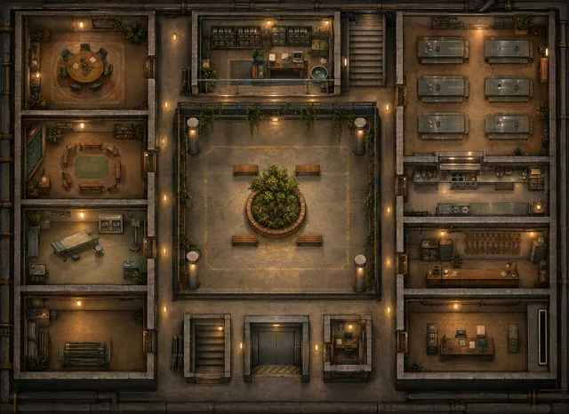

Spisane Prawo
Zeszyt Rusty’ego Spura: co wie o świecie, o sobie i o prawie. Część stron czeka na jego rękę.
 Stajnia 97 „Gardens”
Stajnia 97 „Gardens”
Fallout: Equestria · kampania w Hoofington. „Plewimy, by rosło.”
Dwieście lat po tym, jak megazaklęcia spaliły Equestrię, pustkowia wokół Hoofington wciąż należą do tych, którzy mają więcej kul, więcej szczęścia albo mniej skrupułów. Głęboko pod ziemią przetrwała Stajnia 97 „Gardens” — pacyfistyczna społeczność żyjąca z przedwojennych upraw. Aż do dziś, kiedy jej drzwi otworzyły się same.
Tu jest wszystko w jednym miejscu: świat, materiały dla graczy, postacie, mapy i notatki prowadzącego. Szukaj klawiszem /.
 01
Świat i Stajnia 97
Założenia kampanii, Stajnia 97 „Gardens”, jej mieszkańcy i Nadzorczyni Lily Pad.
7 materiałów · 🖼️ 5 · 🌐 1 · 📄 1
01
Świat i Stajnia 97
Założenia kampanii, Stajnia 97 „Gardens”, jej mieszkańcy i Nadzorczyni Lily Pad.
7 materiałów · 🖼️ 5 · 🌐 1 · 📄 1
 02
Dla graczy
Wybór rasy, co czytać w podręczniku, ściągi oraz materiały fabularne do wręczenia: podręcznik Stajni, audycja DJ PON-3, wiadomość od Obserwatora, opowieść zebr i zaproszenia na sesję.
13 materiałów · 🖼️ 5 · 🌐 4 · 📕 1 · 📄 1 · 📘 1 · 📦 1
02
Dla graczy
Wybór rasy, co czytać w podręczniku, ściągi oraz materiały fabularne do wręczenia: podręcznik Stajni, audycja DJ PON-3, wiadomość od Obserwatora, opowieść zebr i zaproszenia na sesję.
13 materiałów · 🖼️ 5 · 🌐 4 · 📕 1 · 📄 1 · 📘 1 · 📦 1
 03
Postacie
Postacie graczy: karty, portrety, znaczki i ich osobiste materiały.
12 materiałów · 📕 6 · 🖼️ 5 · 📘 1
03
Postacie
Postacie graczy: karty, portrety, znaczki i ich osobiste materiały.
12 materiałów · 📕 6 · 🖼️ 5 · 📘 1

04 Mapy Wrota i atrium Stajni 97 oraz stodoła na końcu tunelu zwiadowczego. 5 materiałów · 🖼️ 5 06
Galeria
Pozostałe grafiki i portrety.
3 materiały · 🖼️ 3
06
Galeria
Pozostałe grafiki i portrety.
3 materiały · 🖼️ 3
Zeszyt Rusty’ego Spura: co wie o świecie, o sobie i o prawie. Część stron czeka na jego rękę.
Karta postaci (Fallout: Equestria V1.22) — Rusty Spur, kucyk ziemny. Gracz: Erwin.
Zapis audycji DJ PON-3 dla świeżaków: poradnik przetrwania, kącik techniczny, magia, wiadomości z Hoofington.
Zapis z głośnika sprite-bota, który odnalazł cię zaraz po wyjściu ze Stajni. Osiem części, kilkanaście minut czytania.
Podręcznik mieszkańca, edycja szkolna — wszystko, co młody kucyk ze Stajni 97 „powinien wiedzieć” przed Dniem Otwarcia.
Co stara zebra mówi młodym w noc przed próbą. Świat pustkowi oczami zebr.
Enter — otwórz · Esc — zamknij